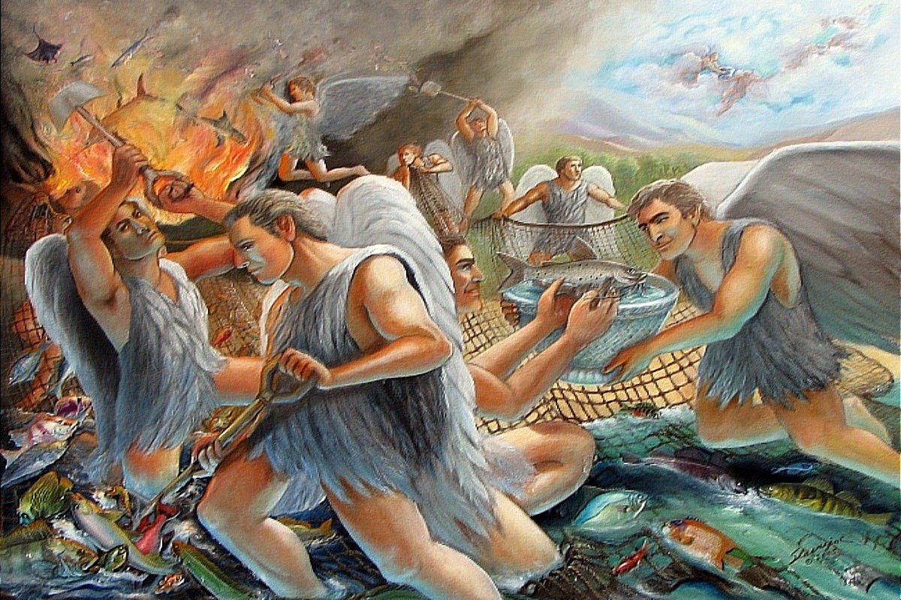

The Parable Of The Net
Again, the kingdom of heaven is like unto a net, that was cast into the sea, and gathered of every kind:
Which, when it was full, they drew to shore, and sat down, and gathered the good into vessels, but cast the bad away.
So shall it be at the end of the world: the angels shall come forth, and sever the wicked from among the just,
And shall cast them into the furnace of fire: there shall be wailing and gnashing of teeth.
Jesus saith unto them, Have ye understood all these things? They say unto him, Yea, Lord.
Then said he unto them, Therefore every scribe which is instructed unto the kingdom of heaven is like unto a man that is an householder, which bringeth forth out of his treasure things new and old.
Matthew 13:47-52
- 